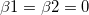
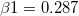

Cox比例ハザードモデル
COX-Model-Estimator
概要
比例ハザードモデル、またはCOXモデル推定法は、生存分析において典型的な半パラメータ手法です。COXモデル推定法は各対象に対して生存する際の変数の影響や死の危険に対して推定します。COX回帰分析から、生存変数に対する関数として危険の数式を求めます。説明変数の正の回帰係数はその変数の値が大きくなると、危険がより高くなることを意味しています。説明変数が負の回帰係数を持つ場合は、その変数の値が大きくなると危険が低くなります。
比例ハザードの仮定は次の通りです。観測結果は独立で、ハザード比率は全ての時間で等しい必要があります。つまり、1つの出来事に関するハザード比率と他の出来事では、時間の経過と共に変化しない事が仮定されています。
学習する項目
このチュートリアルでは、以下の項目について解説します。
Cox比例ハザードモデルを実行
- 新しいワークブックを用意します。ヘルプ: フォルダを開く: サンプルフォルダを選択して、サンプルフォルダを開きます。このフォルダ内のStatisticsサブフォルダにあるphm_Cox.dat ファイルを探します。空のワークシートにファイルをドラッグアンドドロップしてインポートします。
- メニューから統計：生存分析：COX比例ハザードモデルと選択し、ダイアログを開きます。
- A(X):month列を時間範囲にセットします。同様に、打切り範囲にB(Y）:status列を入力します。
- ワークシートから選択ボタンをクリックして、「共分散範囲」ボックスではCharlson と tKt_v 列を選択します。
- 打切り値のドロップダウンリストから打切り値として0を選択します。
- 「生存プロット」グループでは、生存グラフとハザードグラフのチェックを付けます。
- OK ボタンをクリックして、Cox比例ハザードモデル分析を実行します。
結果の解釈
分析レポートのワークシートCoxPHM1を開きます。
- 「イベントと打ち切り変数のサマリー」表から、打切りは112で打切りパーセントは0.8である事がわかります。
- 以下の表はこのモデルが有意かどうかを示しています。帰無仮説はとなります。この例では、Pr > ChiSq =4E(-4)<0.05となるので、帰無仮説を棄却します。つまり、
 またはもしくは両方です
またはもしくは両方です 。
。
- 「パラメータ推定の解析」では、charlsonの推定係数は0.2876となり、 Pr > ChiSq =5E-4<0.05となります。よって、は有意に異なる charlson変数になります。ハザード比率は予測因子が1単位増えるときの推定変化として読み取る事ができます。charlson変数に関してはハザード比=1.333なので、charlsonが1単位増えるとハザードは1.333倍になる事になります。同じように、tKt_vは有意変数です。tKt_vの推定係数はとなり、ハザード比は0.433となります。これから、ハザード関数、h(t,x)=h0(t)*exp(0.2876*charlson-0.837*tKt_v)が分かります。
- 生存関数プロットは各時間で生存している個体数を表示し、推定したモデルを視覚的に表示しています。水平の軸はイベントまでの時間を示します。垂直の軸は生存する確率を示します。
- ハザード関数プロットは、イベントがその瞬間に起こる確率をグラフで表しています。